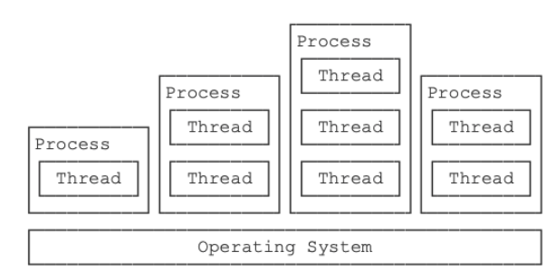

多线程
进程与线程、多线程¶
进程：正在运行的程序的实例¶
- 私有空间、彼此隔离
- 是操作系统分配资源的基本单位
- 多进程之间不共享内存
一个应用也可能包含多个进程
线程：进程中一个单一顺序的控制流¶
- 操作系统能够进行运算调度的最小单位，是CPU的基本单位
- 包含在进程中，是进程的实际运作单位
- 一个进程可以包含多个线程
- 一个进程至少包含一个线程
- 多个线程之间共享内存

| 进程 | 线程 |
|---|---|
| 重量级 | 轻量级 |
| 一个应用包含多个进程 | 一个进程包含多个线程 |
| 多个进程之间不共享内存 | 一个进程的多个线程之间共享内存 |
| 进程表现为虚拟机 | 线程表现为虚拟CPU |
线程的状态¶
- 新建状态
- 可运行状态
- 阻塞状态
- 等待状态
- 计时等待状态
- 终止状态
创建线程¶
- 两种方式
- 继承
Thread类 - 实现
Runnable接口
- 继承
- 调用
start方法- 启动线程，将引发调用
run方法 start方法将立即返回- 新线程将并发运行
- 启动线程，将引发调用
// 实现方法1：继承
public class Thread1 extends Thread{
@Override
public void run(){
System.out.println("New Thread");
}
}
// 实现方法2：实现接口
public class Thread2 implements Runnable{
@Override
public void run(){
System.out.println("New Thread");
}
}
public class Main{
public static void main(String[] args){
new Thread1().start();
new Thread(new Thread2()).start();
}
}
直接调用 run 方法只会执行同一个线程中的任务， 而不会启动新线程
在实际生成中Runnable更常用，其优势在于：
- 任务与运行机制解耦，降低开销；
- 更容易实现多线程资源共享
- 避免由于单继承局限所带来的影响
Java8之后引入了lambda语法，可以将创建线程简化为
public static void main(String [] args){
Runnable r = ()->{
// do sth...
}
new Thread(r).start();
}
线程阻塞（被动）¶
线程在什么情况下会进入阻塞状态？
- 当一个线程试图获取一个内部的对象锁，但是这个锁被其他线程持有
线程在什么情况下会变成非阻塞状态？
- 当所有其他线程释放该锁，并且线程调度器允许本线程持有它的时候
线程等待（主动）¶
- 运行\(\to\)等待
- 当前线程调用
Object.wait()方法，等待被其他线程唤醒 - 其他线程调用
Thread.join()方法，等待其他线程结束后，主线程再执行
- 当前线程调用
- 等待\(\to\)运行
- 等待的线程被其他线程对象唤醒，调用
Object.notify()或者Object.notifyAll() - 调用
Thread.join()方法的线程结束
- 等待的线程被其他线程对象唤醒，调用
终止线程¶
线程终止的原因：
- run方法正常退出
- 因为一个没有捕获的异常而终止了run方法
正确退出线程的方法：
- 使用
interrupt方法中断线程 - 使用退出标志（也就是当
run方法完成后线程终止）
线程同步¶
当多个线程同时运行时，线程的调度由操作系统决定，程序本身无法决定
如果多个线程同时读写共享变量，会出现数据不一致的问题
代码实现：使用关键字synchronized对一个对象加锁
class AddThread extends Thread {
public void run() {
for (int i=0; i<10000; i++) {
synchronized(Counter.lock) {// 获取锁
Counter.count += 1;
} // 释放锁
}
}
}
class DecThread extends Thread {
public void run() {
for (int i=0; i<10000; i++) {
synchronized(Counter.lock) {// 获取锁
Counter.count -= 1;
} // 释放锁
}
}
}
线程死锁¶
例：在线程A持有锁A并想获得锁B的同时，线程B持有锁B并尝试获得锁A，那么这两个线程将永远地等待下去
为避免出现死锁，线程获取锁的顺序要一致
任务创建与线程池¶
任务创建¶
在前面提到可以实现Runnable接口以封装一个异步运行的任务(没有参数和返回值)，如果要在线程执行结束后获得执行结果的话，就必须通过共享变量或者线程通信的方式来达到效果
Callable可以更简单的实现这一要求
- 需要实现
call方法 - 例：
Callable<Integer>表示返回Interger对象的异步计算任务 - 可以抛出异常
- 不能直接进行线程操作，也不能传入
Thread
例：
// 实例化 Callable 任务，指定返回类型为 String
Callable<String> callable = new Callable<String>() {
public String call() throws Exception {
// balabalabala~
return "Hello world ~";
}
}
如何执行Callable？
使用FutureTask执行（调用java.util.concurrent包）
- 将
callable任务委托给FutureTask - 因为
FutureTask实现了Runnable接口，所以使用new Thread(task).start()便可以启动线程
如何获取返回值？
例：String call = task.get()
线程池¶
池化技术能够减少资源对象的创建次数，提高程序的性能，特别是在高并发下这种提高更加明显
线程池优点
- 降低资源消耗。 通过重复利用已创建的线程降低线程创建和销毁造成的消耗。
- 提高响应速度。 当任务到达时，任务可以不需要等到线程创建就能立即执行。
- 提高线程的可管理性。
生产者-消费者模式¶
某个模块负责产生数据，这些数据由另一个模块来负责处理
产生数据的模块，就形象地称为生产者；而处理数据的模块，就称为消费者
如果生产者生产速度过快，消费者消费的很慢，并且缓存区达到了最大时。缓存区会阻塞生产者， 让生产者停止生产，等待消费者消费了数据后，再唤醒生产者
当消费者消费速度过快时，缓存区为空时。缓存区则会阻塞消费者，待生产者向队列添加数据后， 再唤醒消费者
优点¶
并发：生产者和消费者各司其职，都只需要关注缓冲区，不需要相互关注，支持高并发，将一个耗时的流程拆分成两个阶段
解耦：生产者和消费者进行解耦（通过缓冲区通讯）